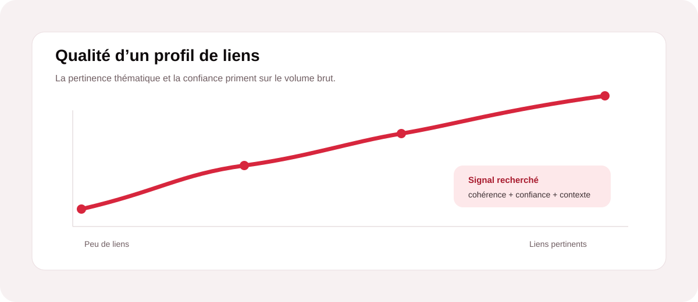
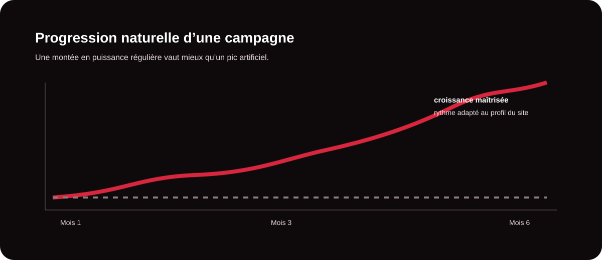
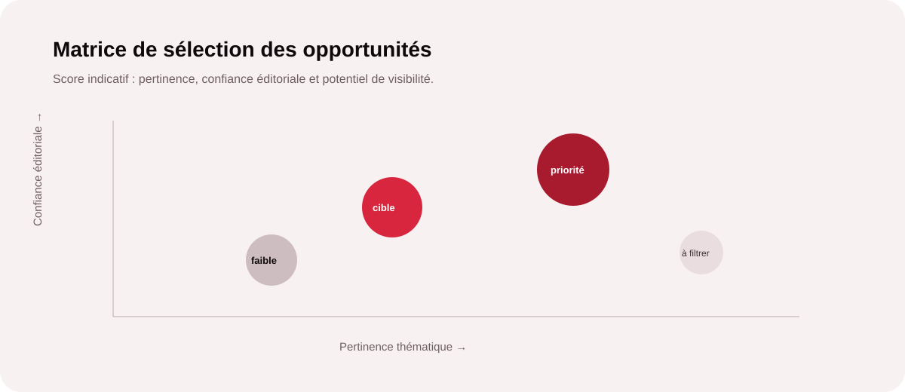

Un bon netlinking ne consiste pas à accumuler des backlinks. Il consiste à obtenir des liens qui ont une raison éditoriale d’exister, qui renforcent la crédibilité d’une page et qui s’intègrent dans une croissance cohérente du site. Pour une entreprise qui cherche à gagner en visibilité, quelques placements pertinents peuvent être plus utiles qu’un grand volume de liens faibles ou artificiels.

1. Comprendre ce qu’un backlink doit apporter
Un backlink est un lien placé sur un autre site qui renvoie vers une page de votre domaine. Il peut contribuer à la découverte de vos contenus, générer du trafic qualifié et participer aux signaux d’autorité pris en compte par les moteurs. Mais tous les liens ne se valent pas. Un site crédible, actif et proche de votre univers professionnel offre généralement un contexte bien plus intéressant qu’un domaine créé uniquement pour publier des liens.
La première question à poser n’est donc pas « combien de liens pouvons-nous acheter ? », mais « pourquoi ce site ferait-il naturellement référence à notre contenu ? ». Cette logique éditoriale constitue une base saine pour construire une campagne durable.
2. Comment sélectionner des sites réellement pertinents ?
La sélection doit combiner plusieurs critères. La proximité thématique est importante : un média, blog ou site professionnel qui traite de votre secteur permet de placer le lien dans un environnement compréhensible pour le lecteur. Il faut ensuite observer la qualité éditoriale : fréquence de publication, originalité des contenus, cohérence des rubriques et présence d’un véritable lectorat.
Enfin, il est utile d’examiner le profil global du domaine : historique, visibilité, liens entrants, pages réellement indexées et éventuels signaux de faible qualité. Un indicateur isolé ne suffit jamais. Les métriques d’outils SEO sont des aides à la décision, pas une preuve absolue de valeur.
| Critère | Bon signal | Signal à surveiller |
|---|---|---|
| Pertinence | Thématique proche, audience cohérente, article utile au lecteur. | Site sans rapport avec votre activité ou sujets très dispersés. |
| Éditorial | Contenus originaux, réguliers et réellement informatifs. | Pages génériques, textes faibles ou publications en série. |
| Visibilité | Pages actives, trafic potentiel et présence organique crédible. | Domaine peu actif ou construit essentiellement autour de liens. |
| Profil de liens | Backlinks diversifiés et cohérents avec le positionnement du site. | Réseau de liens très artificiel, ancres répétitives ou provenance douteuse. |
3. Construire une progression naturelle
Une campagne sérieuse s’inscrit dans le temps. Le rythme doit tenir compte de l’âge du domaine, de son niveau d’autorité, de sa capacité éditoriale et de l’ensemble des actions SEO déjà engagées. Il n’existe pas de nombre universel de backlinks à obtenir chaque mois.
Une progression naturelle signifie aussi varier les pages ciblées, les contextes et les formulations d’ancres. Toutes les acquisitions ne doivent pas pointer vers la page d’accueil : des guides, pages services, études de cas ou contenus de fond peuvent devenir des destinations pertinentes. Cette diversification rend le profil plus crédible et aide à soutenir différentes étapes du parcours de recherche.

Votre profil de liens mérite-t-il d’être renforcé ?
MinoSeo peut analyser vos backlinks, vos opportunités éditoriales et vos priorités avant de définir un rythme d’acquisition cohérent.
Demander un diagnostic4. Les ancres : varier sans sur-optimiser
L’ancre est le texte cliquable du lien. Elle donne au lecteur — et aux moteurs — un contexte sur la destination. Une stratégie propre évite de répéter mécaniquement la même expression commerciale. Selon le contenu, l’ancre peut être une marque, une URL, une formulation descriptive ou une expression liée au sujet.
Le bon équilibre dépend du profil global du site. L’objectif n’est pas de fabriquer une répartition parfaite, mais de conserver une logique éditoriale : le lien doit sembler utile avant même de penser au référencement. Si un placement paraît forcé à la lecture, il mérite probablement d’être repensé.
5. Éviter les pratiques risquées
Le netlinking devient risqué lorsqu’il cherche à manipuler les signaux de popularité au lieu de développer une véritable autorité. Les achats massifs de liens de faible qualité, les réseaux de sites artificiels, les ancres sur-optimisées et les publications sans valeur ajoutée peuvent fragiliser une stratégie à moyen terme.
Le risque ne se mesure pas uniquement au fait qu’un lien soit « payant ». Une collaboration éditoriale peut être légitime lorsqu’elle produit un contenu utile et transparent. Le point essentiel est de ne pas construire un profil artificiel dont la seule fonction serait de pousser mécaniquement des mots-clés.
6. Une méthode de sélection orientée qualité
Chez MinoSeo, une opportunité de netlinking doit être évaluée dans son contexte. Nous pouvons croiser la pertinence du domaine, la qualité de sa ligne éditoriale, sa visibilité, le sujet de la page, le type de lien envisagé et sa place dans la stratégie globale. L’objectif est de privilégier les placements qui ont une valeur SEO, éditoriale ou commerciale, idéalement plusieurs à la fois.

- Identifier les pages qui méritent réellement de gagner en autorité.
- Définir les thématiques et audiences prioritaires.
- Qualifier les domaines avant toute publication.
- Varier les destinations, contextes et formulations d’ancres.
- Suivre les acquisitions et les résultats dans la durée.
7. Mesurer ce qui compte vraiment
Une campagne de netlinking ne doit pas être pilotée uniquement par le nombre de backlinks obtenus. Il faut suivre l’évolution de la visibilité des pages ciblées, leur capacité à se positionner sur des requêtes stratégiques, le trafic organique, la qualité des domaines référents et, lorsque cela est pertinent, les conversions générées.
Cette approche permet de distinguer une campagne qui « produit des liens » d’une campagne qui construit de l’autorité. Elle facilite aussi les arbitrages : renforcer une thématique, modifier une page cible, ralentir un rythme ou investir davantage dans un contenu qui mérite d’être cité.
Netlinking : moins de volume, plus de pertinence
Le netlinking de qualité est un travail de sélection, de cohérence et de patience. Les meilleurs profils de liens ne sont pas nécessairement ceux qui comptent le plus de domaines référents, mais ceux qui construisent une autorité crédible autour du site. Pour une entreprise, la priorité doit donc être claire : obtenir des liens qui ont du sens pour son audience et qui s’inscrivent dans une stratégie SEO globale.
MinoSeo accompagne cette démarche avec une approche progressive : identification des opportunités, qualification des sites, choix des pages cibles, suivi des placements et lecture des résultats. La qualité devient alors un investissement durable plutôt qu’un simple volume d’acquisitions.
Construisons un netlinking plus qualitatif pour votre site
Vous voulez renforcer votre autorité sans multiplier les liens inutiles ? MinoSeo peut vous aider à définir une stratégie de netlinking cohérente avec vos objectifs SEO et GEO.
Parler de votre projet